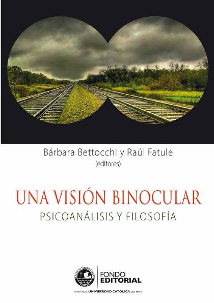

Una visión binocular : psicoanálisis y filosofíaBettocchi, Bárbara; Fatule, Raúl

Una visión binocular : psicoanálisis y filosofía
Bettocchi, Bárbara; Fatule, Raúl
En 1962, Wilfred Bion introdujo el concepto de visión binocular en el psicoanálisis con el fin de describir un estado mental de percepción ampliada: la capacidad para transitar de lo consciente a lo inconsciente y viceversa. Dieciséis años después, Hans Loewald, otra figura emblemática de esta disciplina, también pensó en esta noción para caracterizar la vivencia en la que la realidad y la fantasía se experimentan simultánea y separadamente, enfoque que posibilita una comprensión más extensa de ambos fenómenos. Por ello, los editores de este libro, Bárbara Bettocchi y Raúl Fatule, han escogido
- Obtenido de
- Pontificia Universidad Católica del Perú
- Editorial
- Pontificia Universidad Católica del Perú. Fondo Editorial, 2014
- Licencia
- CC BY-NC-ND 2.5
- Tipo
- General · 266 páginas
Historia y corrientes de la psicologíaPsicoanálisis